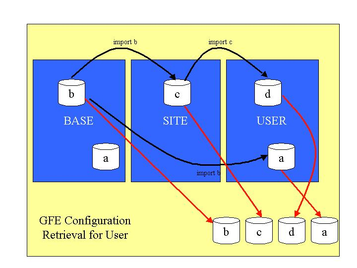

GFE Configuration Information
Overview
The gfe may be started with different configuration
files. Some of these files may be overridden by the site or by individual
users. The GFE configuration files define many of the display characteristics
of weather elements, such as color tables, contour intervals, user interface
fonts, as well as default modes for many of the tool states.
By default, the GFE uses a configuration file called gfeConfig.py.
This is provided as an installed file in BASE, and can be overridden by
the site or individual users. At no
time should the files that are sent with the software release or install
be modified directly. These will be overwritten with the next upgrade.
The technique to modify or create new gfe configuration
files is through the GFE -- not by hand editing.
Sites will need to create alternative GFE configuration
files for use with the ifpIMAGE program.
That program uses the GFE in background mode to generate Portable Network
Graphics imagery.
The format of the GFE
configuration file is documented here.
GFE Configuration Modification Options
There are several scenarios for modifying the standard gfe configuration
option. The recommended option is partial site overrides and user
overrides from the installed base. You can override all entries in
the gfe configuration file.
The configuration overrides described below describe the actual locations
of the files. Normally you would define
a new configuration file by using the GFE GUI.
The technique for the GFE to pick up configuration files uses the standard
BASE,
SITE, USER concept. With this concept, files can be merged using
the Python "import statement" since GFE configuration files contain Python
code.
The basic rule is that using the same name as an existing file "up the
tree", e.g., from SITE or USER, will result in a complete override
of the definitions "up the tree". If your site or user files are
of a different name, then you can import the symbols from the site or base
files with the result that your configuration file simply contains overrides.
No Changes From Installed Files
This is the default case. There is nothing you need to do.
Partial Site Override of Standard GFE Configuration (recommended)
Start the Localization perspective from the main menu by selecting
GFE->Define Config and ifpIMAGE Files. Create a new gfe configuration file
with just the entries you want to override. The filename must be
different from the base configuration file since you will be importing
all of the definitions from the base configuration file. This should be
a small file. Save the file in SITE, which puts it in the SITE area of the
server. The advantage of partial overrides is that new BASE files
can be installed and your overrides will still work. Be sure to include
the appropriate Python "import" statement.
Partial User Override of Site's or Standard GFE Configuration (recommended)
Start the Localization perspective from the main menu by selecting
GFE->Define Config and ifpIMAGE Files for the user for whom you want to create a
new configuration. Create a new gfe configuration file with just
the entries you want to override, but use a different name. Be sure to
use the Python import statement to include all of the definitions from
the SITE or BASE files. (Note: the list of all of the available files are
presented to you when you start the GFE.) The created file should be a
small file. Save the file for your user name, which puts it at the user's customized
location in the server. The advantage of partial overrides is that
new BASE or SITE files can be installed and your overrides will still
work.
Complete Site Override of Standard GFE Configuration (not
recommended)
The GFE will not let you do this directly since when you try to edit the
original BASE file, it will be displayed as a read-only version.
In order to completely override the standard GFE configuration, you must
go into the server directories and copy the gfe configuration file from
the original location (leave the original
one there) to the site's customized location.
The filename should remain the same. The disadvantage of this situation
is that you will need to do a careful comparison between newly upgraded
files and your modified files after each upgrade, and you will not be able
to import files of the same name.
Complete User Override of Standard GFE Configuration (not
recommended)
The GFE will not let you do this directly since when you try to edit the
original BASE file, it will be displayed as a read-only version.
In order to completely override the standard GFE configuration, you must
go into the server directories and copy the gfe configuration file
from the original location (leave the
original one there) to the user's customized
location. The filename should remain the same. The disadvantage of
this situation is that you will need to do a careful comparison between
newly upgraded files and your modified files after each upgrade, and you
will not be able to import files of the same name.
How the GFE Gets Its Configuration
The GFE and ifpIMAGE programs get their configuration through the standard
BASE,
SITE, USER file access scheme. Only those items that you wish changed
are necessary to place in the SITE and USER directories since you can refer
to the files at the higher level using the "import" statement.
The method you use to place files at the SITE and USER level is to access
the Localization perspective either through GFE, or directly and save the
created files to the SITE/USER levels as desired.
You then access the define gfe configuration file through the main menu
entry GFE->Define
Config and ifpIMAGE files. Please
do not modify the files directly in the server directories; instead
use the GFE.
The illustration shows how the access is performed:

In the above picture, configuration file "d" imports "c" which imports
"b". Only a few items need to be overridden in files "c" and "d"
to result in a gfe configuration file that resembles b+c+d. File
"a" in the USER imports "b" in the BASE so the result is a+b. Note
that since there is a file "a" in the USER that it completely hides the
"a" in BASE.
The following examples illustrates this merging concept for configration
file "d". Only portions of the configuration files are shown.
BASE file (b)
The comments have been removed from this example. Only a portion
of the configuration file is shown. Three entries are shown : the
default sample set, the default map backgrounds, and the default color
table for weather element "T". For this example, we are assuming
that the base gfe configuration file is named BASEgfeConfig.
.....
DefaultSamples = ['DefaultSamples']
MapBackgrounds_default = ['CWA','States']
T_defaultColorTable="midrange enhanced"
....
SITE file (c)
This is the entire configuration file ( 4 lines). A DefaultSamples
is shown, as well as a default color table for weather element "Td".
from b import *
DefaultSamples = ['CitySamples','ObsSamples']
Td_defaultColorTable="mid temp enhanced"
USER file (d)
This is the entire configuration file (4 lines). The user has defined
the default map backgrounds and contour font. It is assumed that
the site configuration file is called SITEgfeConfig.
from c import *
MapBackgrounds_default = ['CWA_Zones']
Contour_font = 4
The following shows the effective composite configuration file for the
USER (keeping in mind there are other entries in the BASE file that are
not shown):
DefaultSamples = ['DefaultSamples']
MapBackgrounds_default = ['CWA','States']
T_defaultColorTable="midrange enhanced"
DefaultSamples = ['CitySamples','ObsSamples']
Td_defaultColorTable="mid temp enhanced"
MapBackgrounds_default = ['CWA_Zones']
Contour_font = 4
which simplifies to:
T_defaultColorTable="midrange enhanced"
DefaultSamples = ['CitySamples','ObsSamples']
Td_defaultColorTable="mid temp enhanced"
MapBackgrounds_default = ['CWA_Zones']
Contour_font = 4
Location of Files
The gfe configuration files are served out of EDEX. As
a result, you should NEVER edit these files directly.
The location of the gfe configuration files are shown for your convenience,
but not for you to edit directly:
| File Purpose |
Part of Std. Rel. |
AWIPS File Location, directory |
| Base gfe configuration files |
YES
|
/awips2/cave/etc/gfe/userPython/gfeConfig |
| Site modified gfe configuration files |
NO |
/awips2/edex/data/utility/cave_static/site/SITE_ID/gfe/userPython/gfeConfig |
| Customized user gfe configuration files |
NO |
/awips2/edex/data/utility/cave_static/user/USER/gfe/userPython/gfeConfig |
* USER is the user name